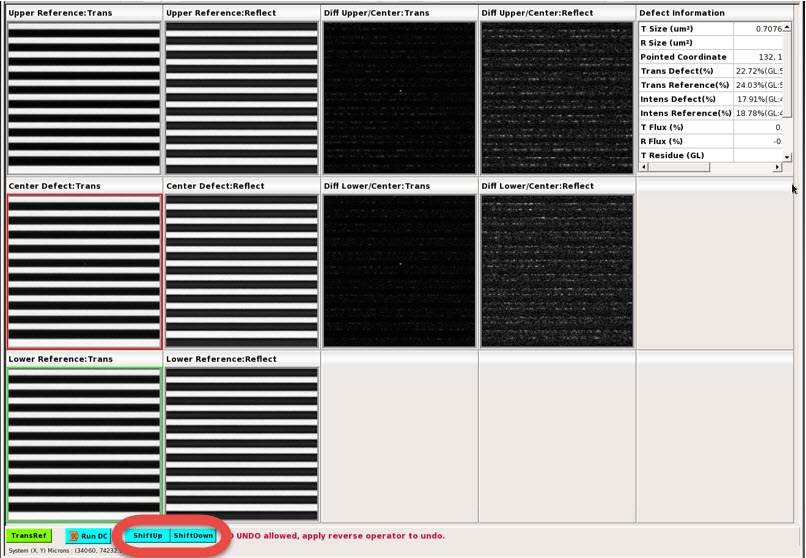

When
the inspection tool cannot place the defect in the defect die image
correctly, you can correct the placement of the defect from reference
die to the correct defect die using Calibre DefectReview in TransRef
modality. You can manually swap the defects in the upper or lower dies
in an IMU window.
Note: Manually swapping dies is
supported only in TransRef modality.
Procedure
- Set the
Image Measurement Unit (IMU) window to TransRef modality. The IMU displays
defect images.
- In the IMU, click the ShiftUp and ShiftDown buttons at the bottom of
the window to change the order, moving the defect images up or down,
swapping dies. The defect automatically updates once the positions
are shifted.
ShiftUp moves the defect image to
the upper reference image and the lower reference image shifts to
the center defect image. The diff and other defect images are updated
accordingly.
ShiftDown moves
the defect image to the location of the lower reference image and the
upper reference becomes the center defect image.
Figure 1. Manual Die Swap in TransRef Modality
Note: These operations cannot be
reverted. However, you can undo an operation by performing the opposite
(for example, perform a ShiftDown to
undo a ShiftUp operation).
- Once you finalize the die swap, run Calibre
DefectClassify by clicking Run DC.
Calibre DefectClassify
runs on a single defect and updates the Defect List columns. During
a Calibre DefectClassify run, the tool uses the configuration file
specified in the paramFilePath node of the dat-ini.xml file.
Figure 2. paramFilePath Node
- You can save changes in your inspection file
by selecting Save or Save As.